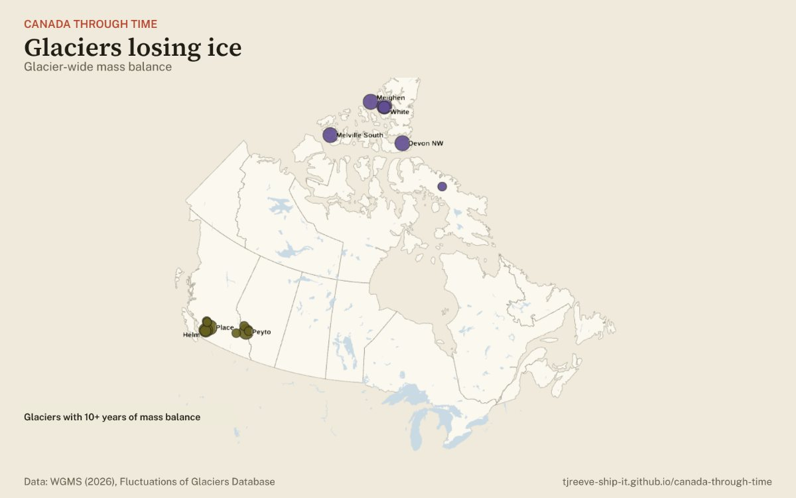

Climate · glaciers
Canada’s glaciers, measured every year

Open the glacier map →A handful of Canadian glaciers have been measured every year for decades: snow gained minus ice and snow melted, expressed as metres of water spread over the whole glacier. 7 of the 7 glaciers measured for 40 years or more have lost ice overall.
| Glacier | Years | Measured | Running total |
|---|---|---|---|
| Meighen Ice Cap | 1960–2025 | 66 yrs | -13.7 m |
| Devon Ice Cap NW | 1961–2025 | 65 yrs | -10.6 m |
| Melville South Ice Cap | 1963–2025 | 63 yrs | -20.4 m |
| White | 1960–2025 | 63 yrs | -14.6 m |
| Peyto | 1966–2025 | 60 yrs | -48.5 m |
| Place | 1965–2025 | 60 yrs | -61.1 m |
| Helm | 1975–2025 | 49 yrs | -69.8 m |
| Baby | 1960–2005 | 34 yrs | -5.1 m |
| Sentinel | 1966–1989 | 24 yrs | +4.2 m |
| Ward H. I. Rise | 1959–1985 | 23 yrs | -1.1 m |
| Athabasca | 2013–2025 | 11 yrs | -5.9 m |
| Barnes Ice Cap South Dome N Slope | 1971–1983 | 10 yrs | -0.8 m |
| Ram River | 1966–1975 | 10 yrs | -4.1 m |
| Sykora | 1976–1985 | 10 yrs | -1.4 m |
| Woolsey | 1965–1975 | 10 yrs | -1.3 m |
| Zavisha | 1976–1985 | 10 yrs | -1.4 m |
Running total = the sum of the measured years (years without a measurement are skipped). Source: WGMS (2026), Fluctuations of Glaciers Database, doi:10.5904/wgms-fog-2026-02-10.
Open the glacier map →